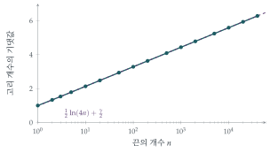

STEP III 2008, 문제 13
계속 읽기 전에 문제를 먼저 읽어 보자. 문제는 STEP Support Programme의 문제 데이터베이스에 있다: step.maths.org/questions/08-s3-q13
도입
끈 백 가닥을 주머니에 넣어 끝만 삐져나오게 한다. 끝 두 개를 무작위로 골라 묶고, 남은 끝이 없을 때까지 이것을 되풀이한다. 그러면 고리 여러 개가 뒤엉킨 덩어리가 남는다. 고리는 몇 개일까? 끈 백 가닥으로 원리상 작은 고리 백 개를 만들 수도 있고, 거대한 고리 하나를 만들 수도 있다. 놀랍게도 고리 개수의 기댓값(expected value)은 겨우 \(3.3\) 정도이고, 끈이 사만 가닥이어도 여전히 \(6\) 정도에 불과하다.
핵심 관찰 하나로 이 문제는 거의 자명해진다. 매듭을 하나 지을 때마다, 무슨 일이 일어났든 상자 안의 끈은 그저 한 가닥 줄어든다. 이 과정은 자신의 이력을 “잊어버리며”, 고리의 개수는 확률이 바뀌어 가는 독립적인 동전 던지기들의 합이 된다.
시작하기 전에
두 끝을 묶은 뒤에는 끈이 몇 가닥 남는가? (고리가 된 것은 더 이상 “가닥”으로 세지 않는다.) 이 개수는 고리가 만들어졌는지에 따라 달라지는가?
두 끝이 같은 끈에 속하면 그 끈은 고리가 되고 \(n - 1\)가닥이 남는다. 서로 다른 끈에 속하면 두 끈은 더 긴 한 가닥이 되고, 역시 \(n - 1\)가닥이 남는다. 어느 경우든 끝이 두 개씩인 끈 \(n - 1\)가닥이 남는다.
차근차근 풀기
단계 1 첫 번째 매듭
끝은 \(2n\)개이다. 하나를 고르면, 그 짝은 나머지 \(2n - 1\)개의 끝 중 어느 것이든 같은 확률로 될 수 있고, 그중 정확히 하나가 같은 끈에 속한다. 따라서 첫 번째 매듭이 고리를 만들 확률은 \(\frac{1}{2n - 1}\)이고, 첫 단계에서 만들어지는 고리 개수의 기댓값은 \(\frac{1}{2n - 1}\)이다.
단계 2 모든 매듭
위의 관찰에 따르면, 두 번째 매듭을 짓기 전의 상황은 어떤가? 세 번째는? 끈이 \(k\)가닥 남았을 때 짓는 매듭에서 고리가 생기는지를 나타내는 지시확률변수(indicator)를 \(I_k\)라 하자. \(\mathrm{E}(I_k)\)는 각각 얼마인가?
각 매듭을 짓기 전에 상자에는 \(k = n, n - 1, \ldots, 1\)에 대해 \(k\)가닥의 끈이 있고, 그 매듭이 고리를 만들 확률은 \(\frac{1}{2k - 1}\)이다. (한 가닥이 남았을 때 짓는 마지막 매듭은 항상 고리를 만든다.) 고리의 총 개수는 \(R = I_n + I_{n-1} + \cdots + I_1\)이므로 \[\mathrm{E}(R) = \sum_{k=1}^{n}\frac{1}{2k - 1} = 1 + \frac13 + \frac15 + \cdots + \frac{1}{2n - 1}. \qed\]
단계 3 분산
지시확률변수 \(I_k\)들은 독립(independent)인가? (어떤 단계에서 고리가 생길 확률이 그 전에 일어난 일에 따라 달라지는가?)
각 단계에서 고리가 생길 확률은 그 전에 무슨 일이 있었든 \(\frac{1}{2k - 1}\)이다. 상태가 언제나 “끈 \(k\)가닥”이기 때문이다. 따라서 \(I_k\)들은 독립이고, 분산(variance)은 더해진다. \[\mathrm{Var}(R) = \sum_{k=1}^{n}\frac{1}{2k - 1}\Bigl(1 - \frac{1}{2k - 1}\Bigr) = \sum_{k=1}^{n}\frac{2k - 2}{(2k - 1)^2}. \qed\]
단계 4 끈 사만 가닥
\(2n - 1\)까지의 홀수의 역수의 합을 조화수(harmonic number)를 써서 나타내어라.
\(2n\)까지의 모든 수의 역수의 합에서 짝수의 역수의 합을 빼면 \[\sum_{k=1}^{n}\frac{1}{2k - 1} = H_{2n} - \tfrac12H_n \approx \ln(2n) - \tfrac12\ln n = \tfrac12\ln(4n).\] \(n = 40\,000\)이면 \(4n = 160\,000 = 20^4\)이므로 \(\mathrm{E}(R) \approx \frac12 \cdot 4\ln20 \approx 6\)이다.■ (정확한 값은 \(6.28\)이다. 차이는 오일러(Euler) 상수(Euler’s constant)에서 오는데, \(H_n \approx \ln n + 0.577\)이기 때문이다.)

돌아보기
과정이 무엇을 잊어버리는지 찾는다. 매듭을 지을 때마다 상자의 상태는 이력과 무관하게 “끈 \(k\)가닥”이었다.
다시 지시확률변수. 고리의 개수는 매듭 하나에 하나씩 대응하는 지시확률변수들의 합이었다.
독립성이 분산을 준다. 각 단계의 확률이 과거에 의존하지 않았으므로 지시확률변수들은 독립이었다.
숨은 수학
로그적 증가
고리 개수의 기댓값은 \(\frac12\ln n\)처럼 증가하고, 분산은 평균에 가깝다(둘 다 작은 확률들의 합이다). 중심극한정리(central limit theorem, 12.24 절)에 따르면, \(n\)이 클 때 고리의 개수는 평균과 분산이 약 \(\frac12\ln(4n)\)인 정규분포(normal distribution)를 근사적으로 따른다. 끈이 \(40\,000\)가닥이면 고리는 대개 \(2\)개에서 \(11\)개 사이로 생긴다.
무작위 순열의 순환
같은 로그가 \(n\)개 대상의 무작위 순열(permutation)이 갖는 순환(cycle)의 개수에도 나타난다. 그 평균은 \(H_n \approx \ln n\)이다(끈 문제는 이와 가까운 친척으로, \(\frac12\ln n\)이다). 무작위 순열은 순환이 적다. 대개 거대한 순환 하나가 원소 대부분을 포함하며, 가장 큰 순환에 속한 원소의 비율은 평균적으로 약 \(0.62\)로, 이것이 골롬–딕맨 상수(Golomb–Dickman constant)이다. 끈을 무작위로 엉키게 하는 것도 같은 방식으로 움직인다. 끈의 대부분은 긴 고리 한두 개에 들어간다. 이러한 사실들은 무작위 조합 구조(random combinatorial structures) 연구의 일부이며, 이 분야는 정수론(number theory)과도 연결되어 있다(무작위 정수의 소인수(prime factors)는 무작위 순열의 순환처럼 행동한다).
끈 묶기 문제는 물리계의 장난감 모형이다. 용액 속의 긴 고분자(polymer) 분자들은 끝과 끝이 이어져 고리와 사슬을 이루며, 고리 형성의 통계는 비슷한 규칙을 따른다. 매듭 이론(knot theory)에서 수학자들은 무작위로 만든 닫힌 고리가 매듭지어져 있을 확률이 얼마인가라는 더 어려운 질문을 던진다. 긴 무작위 고리에 대해서는 그 답이 \(1\)로 수렴하며, 이 결과는 1988년 De Witt Sumners와 Stuart Whittington이 증명하였다.
사고 기술
각 단계 뒤에 계의 상태가 지금까지 거친 단계의 수에만 의존한다면, 각 단계는 독립적으로 행동하고 기댓값과 분산은 그냥 더해진다.
이것이 쿠폰 수집가 문제(coupon collector, 9.11 절)의 바탕에 있는 아이디어로, 거기서는 각 단계가 새로운 기하분포(geometric distribution) 대기 시간이다. 이 아이디어는 현재 상태만이 중요한 마르코프 연쇄(Markov chain) 이론에서도 다시 나타난다.
더 도전하기
작은 경우. \(n = 2\)일 때 가능한 경우를 모두 나열하고, 고리 개수의 기댓값이 \(\frac43\)임을 확인하여라.
하나의 큰 고리. 모든 끈을 포함하는 고리 하나로 과정이 끝날 확률이 \(\prod_{k=2}^{n}\bigl(1 - \frac{1}{2k - 1}\bigr)\)임을 보이고, \(n\)이 클 때 이 값이 근사적으로 \(\sqrt{\frac{\pi}{4n}}\)임을 보여라. (힌트: 이 곱을 \(\binom{2n}{n}\)과 관련지어라.)
순열의 순환. 순열을 원소 하나씩 만들어 가는 방법(“중국 식당(Chinese restaurant)” 구성)으로, \(n\)개 대상의 무작위 순열이 갖는 순환 개수의 기댓값이 \(H_n\)임을 보여라.
분산. \(\mathrm{Var}(R) = \mathrm{E}(R) - \sum_{k=1}^{n}\frac{1}{(2k - 1)^2}\)임을 보이고, 빼는 합이 \(\frac{\pi^2}{8}\)로 수렴함을 보여라.
더 읽을거리
Peter Winkler, Mathematical Puzzles: A Connoisseur’s Collection (A K Peters). 끈 묶기 퍼즐이 실려 있다.
Richard Arratia, Andrew Barbour & Simon Tavaré, Logarithmic Combinatorial Structures (European Mathematical Society). 순환, 소수, 무작위 구조를 다루며, 나중을 위한 책이다.
Colin Adams, The Knot Book (American Mathematical Society). 무작위 매듭을 포함한 매듭 이론 입문서이다.